4.3. Near-Real Time Wave-Solver - Seaside, OR Experimental Replication - Celeris
Problem files |
4.3.1. Overview
{kind=link}
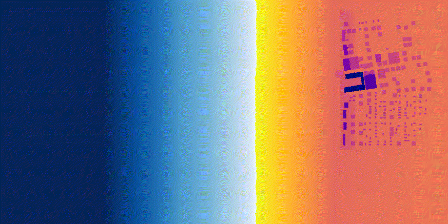
Forward sample a near-real time Celeris wave simulator. Replicate tsunami experiments on a scaled-down Seaside, Oregon, by Cox et al. (2008), performed in Oregon State University’s Directional Wave Basin. Then, use BRAILS and NOAA APIs to perform a full-scale rendition. Two approaches will be taken:
Analysis on an existing, reduced-scale experimental bathymetry file with a limited building inventory for the town of Seaside, Oregon. This represents a typical but unwieldy workflow.
Analysis on a bathymetry that is created at run-time by calling on a NOAA API for bathymetry-topography and merging in automated building inventory scraping results from BRAILS for Seaside, Oregon. This represents a highly automated and convenient workflow.
Hydrodynamic loading comes from a piston-generated solitary wave; we also treat the incoming wave amplitude (mean 0.5, stdev 0.15) and period (mean 20, stdev 4) as random variables.
Note
Keep GI, SIM, EVT, and FEM units consistent between Celeris (wave) outputs and OpenSees (structure) inputs, including any scale factors used for the laboratory-scale replication.
4.3.2. Set-Up
4.3.2.1. Step 1: UQ
Configure Forward sampling only to explore structural and hydrodynamic uncertainty.
Engine: Dakota
Forward Propagation (e.g., LHS) with
samples(e.g.,4) and an optional reproducibleseed(e.g.,1).
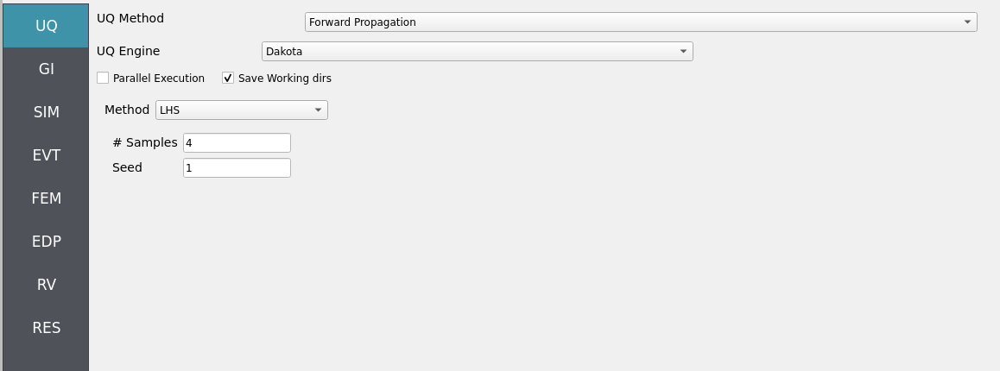
4.3.2.2. Step 2: GI
Set General Information and Units. Ensure units are consistent across the workflow and with the underlying experimental data.
Project name:
OSU_Seaside_CelerisLocation/metadata: optional
Units: choose a consistent set (e.g., N-m-s or kips-in-s)
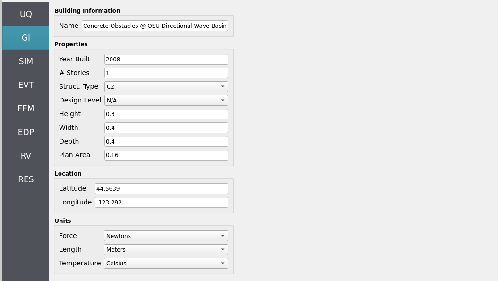
4.3.2.3. Step 3: SIM
The structural model is as follows: a 2D, 3-DOF OpenSees portal frame in OpenSees, OpenSees.

Fig. 4.3.2.3.1 2D 3-DOF portal frame under stochastic wave loading (JONSWAP)
For the OpenSees generator the following model script, Frame.tcl , is used:
Click to expand the OpenSees input file used for this example
1# Create ModelBuilder (with two-dimensions and 3 DOF/node)
2
3model basic -ndm 2 -ndf 3
4
5set width 360
6set height 144
7
8node 1 0.0 0.0
9node 2 $width 0.0
10node 3 0.0 $height
11node 4 $width $height
12
13fix 1 1 1 1
14fix 2 1 1 1
15
16# Concrete ( Youngs Modulus, Yield Strength, and Compressive Strength)
17pset fc 6.0
18pset fy 60.0
19pset E 30000.0
20uniaxialMaterial Concrete01 1 -$fc -0.004 -5.0 -0.014
21uniaxialMaterial Concrete01 2 -5.0 -0.002 0.0 -0.006
22
23# STEEL
24uniaxialMaterial Steel01 3 $fy $E 0.01
25
26set colWidth 15
27set colDepth 24
28set cover 1.5
29set As 0.60; # area of no. 7 bars
30set y1 [expr $colDepth/2.0]
31set z1 [expr $colWidth/2.0]
32
33section Fiber 1 {
34
35 # Create the concrete core fibers
36 patch rect 1 10 1 [expr $cover-$y1] [expr $cover-$z1] [expr $y1-$cover] [expr $z1-$cover]
37
38 # Create the concrete cover fibers (top, bottom, left, right)
39 patch rect 2 10 1 [expr -$y1] [expr $z1-$cover] $y1 $z1
40 patch rect 2 10 1 [expr -$y1] [expr -$z1] $y1 [expr $cover-$z1]
41 patch rect 2 2 1 [expr -$y1] [expr $cover-$z1] [expr $cover-$y1] [expr $z1-$cover]
42 patch rect 2 2 1 [expr $y1-$cover] [expr $cover-$z1] $y1 [expr $z1-$cover]
43
44 # Create the reinforcing fibers (left, middle, right)
45 layer straight 3 3 $As [expr $y1-$cover] [expr $z1-$cover] [expr $y1-$cover] [expr $cover-$z1]
46 layer straight 3 2 $As 0.0 [expr $z1-$cover] 0.0 [expr $cover-$z1]
47 layer straight 3 3 $As [expr $cover-$y1] [expr $z1-$cover] [expr $cover-$y1] [expr $cover-$z1]
48
49}
50
51
52# Define column elements
53# ----------------------
54
55# Geometry of column elements
56# tag
57
58geomTransf Corotational 1
59
60# Number of integration points along length of element
61set np 5
62
63# Create the coulumns using Beam-column elements
64# e tag ndI ndJ nsecs secID transfTag
65set eleType dispBeamColumn
66element $eleType 1 1 3 $np 1 1
67element $eleType 2 2 4 $np 1 1
68
69# Define beam elment
70# -----------------------------
71
72# Geometry of column elements
73# tag
74geomTransf Linear 2
75
76# Create the beam element
77# tag ndI ndJ A E Iz transfTag
78element elasticBeamColumn 3 3 4 360 4030 8640 2
79
80# Define gravity loads
81# --------------------
82
83# Set a parameter for the axial load
84set P 180; # 10% of axial capacity of columns
85
86# Create a Plain load pattern with a Linear TimeSeries
87pattern Plain 1 "Linear" {
88
89 # Create nodal loads at nodes 3 & 4
90 # nd FX FY MZ
91 load 3 0.0 [expr -$P] 0.0
92 load 4 0.0 [expr -$P] 0.0
93}
94
95# ------------------------------
96# Start of analysis generation
97# ------------------------------
98
99# Create the system of equation, a sparse solver with partial pivoting
100system ProfileSPD
101
102# Create the constraint handler, the transformation method
103constraints Transformation
104
105# Create the DOF numberer, the reverse Cuthill-McKee algorithm
106numberer RCM
107
108# Create the convergence test, the norm of the residual with a tolerance of
109# 1e-12 and a max number of iterations of 10
110test NormDispIncr 1.0e-12 10 3
111
112# Create the solution algorithm, a Newton-Raphson algorithm
113algorithm Newton
114
115# Create the integration scheme, the LoadControl scheme using steps of 0.1
116integrator LoadControl 0.1
117
118# Create the analysis object
119analysis Static
120
121# ------------------------------
122# End of analysis generation
123# ------------------------------
124
125# perform the gravity load analysis, requires 10 steps to reach the load level
126analyze 10
127
128loadConst -time 0.0
129
130# ----------------------------------------------------
131# End of Model Generation & Initial Gravity Analysis
132# ----------------------------------------------------
133
134
135# ----------------------------------------------------
136# Start of additional modelling for dynamic loads
137# ----------------------------------------------------
138
139# Define nodal mass in terms of axial load on columns
140set g 386.4
141set m [expr $P/$g]; # expr command to evaluate an expression
142
143# tag MX MY RZ
144mass 3 $m $m 0
145mass 4 $m $m 0
Note
The first lines containing pset in an OpenSees tcl file will be read by the application when the file is selected. The application will autopopulate the random variables in the RV panel with these same variable names.
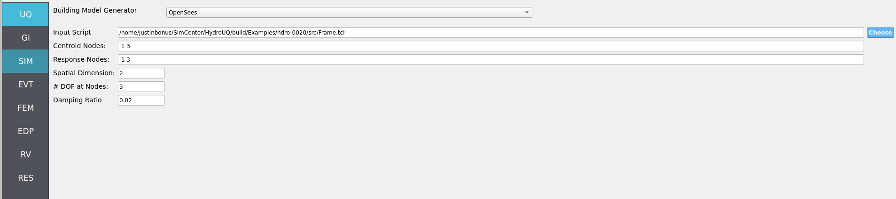
These variable names (fc, fy, E) are recognized in Frame.tcl due to use of the pset command instead of set. This is so that RV picks them up automatically. You can try adding new RV parameters in the same way.
Uncertain properties (treated as RVs; see Step 7):
fc: mean6, stdev0.06fy: mean60, stdev0.6E: mean30000, stdev300
4.3.2.4. Step 4: EVT
Load Generator: Celeris Event - Near-Real-Time Boussinesq Solver (scaled-down Seaside, OR replication per Cox et al. 2008).
Configuration outline:
Bathymetry/geometry: scaled-down Seaside, OR domain matching the experimental layout.
Wavemaker: piston-generated solitary wave.
Hydrodynamic RVs: promote the incoming wave amplitude and period to RVs (see Step 7 for distributions).
Export: time histories of free surface elevation / depth-averaged velocity or pressure/force probes at the structure location for load mapping.
To perform the Seaside, Oregon reduced-scale, manual workflow, load-in the following files to the
Celeristab:
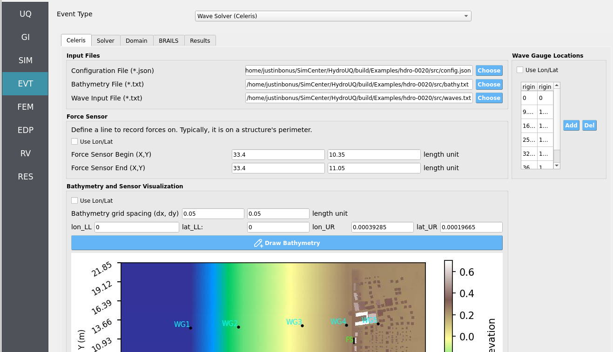
To perform the Seaside, Oregon full-scale, automated workflow using BRAILS for a fleshed-out building inventory and a NOAA API for high-quality bathymetry-topography, configure the following in the
BRAILStab and pressRun. It may take between 20 to 120 seconds to finish:
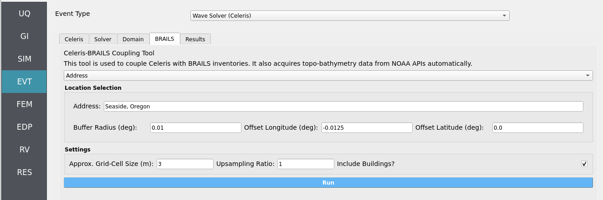
Important
You will need to reconfigure wave-gauges and load-sensors to fit this new bathymetry, as the example’s provided values are valid for the manual workflow only. You will also need to adjust the incoming waves amplitude and period by Froude similitude factors in order to properly scale-up experimental conditions.
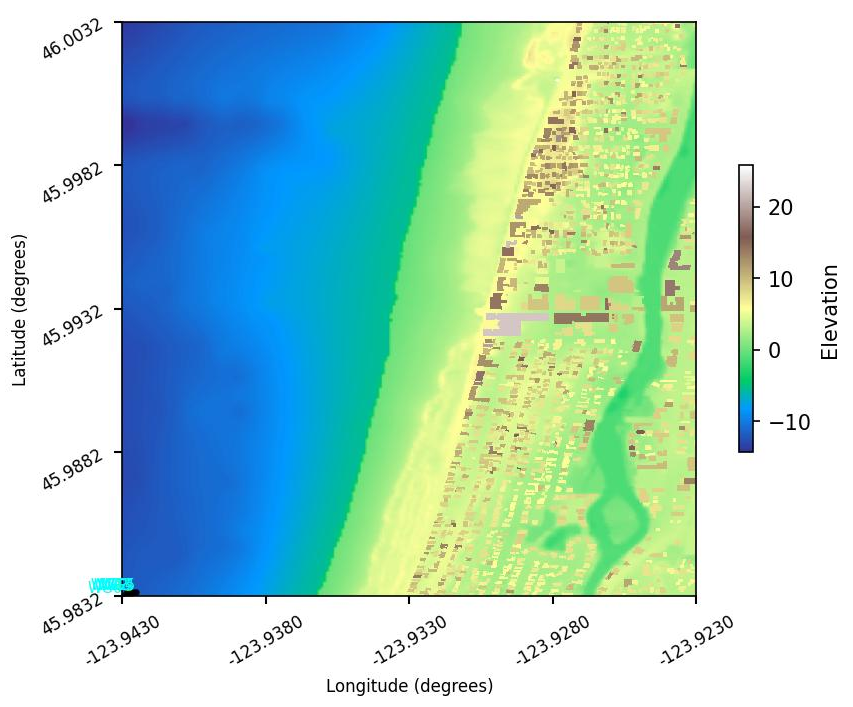
For both workflows, double-check that the following parameters are set in the Solver and Domain tabs:
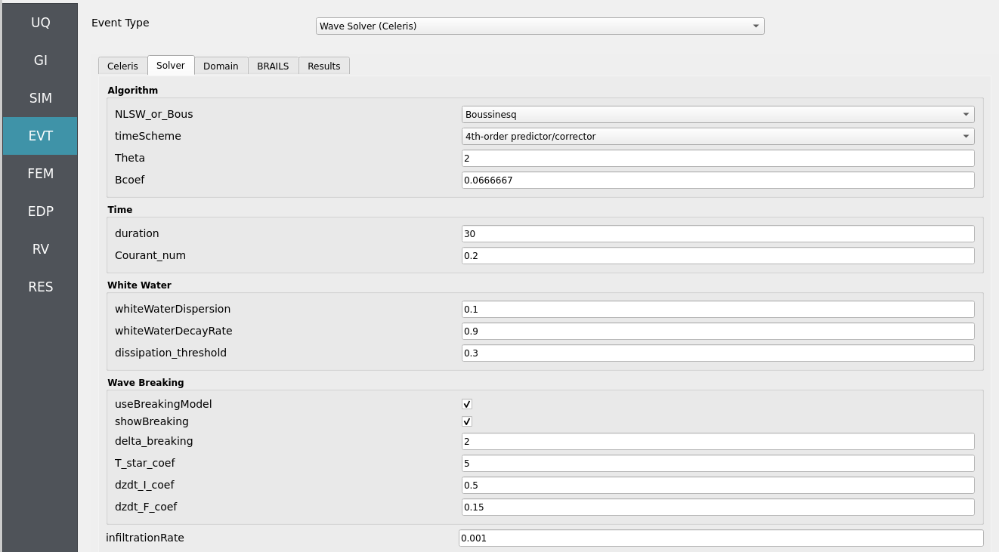

4.3.2.5. Step 5: FEM
Solver: OpenSees dynamic analysis. Check:
Integration step compatible with Celeris output interval.
Algorithm/convergence tolerances suitable for expected nonlinearity.
Damping model as needed (e.g., Rayleigh).

4.3.2.6. Step 6: EDP
Select Engineering Demand Parameters (EDPs) to summarize response:
Peak Floor Acceleration (PFA)
Root Mean Square Acceleration (RMSA)
Peak Floor Displacement (PFD)
Peak Interstory Drift (PID)

4.3.2.7. Step 7: RV
Define distributions for structural and hydrodynamic RVs:
Structural
fc: Normal (mean6, stdev0.06)fy: Normal (mean60, stdev0.6)E: Normal (mean30000, stdev300)
Hydrodynamic (incoming solitary wave)
amplitude: Normal (mean0.5, stdev0.15)period: Normal (mean20, stdev4)
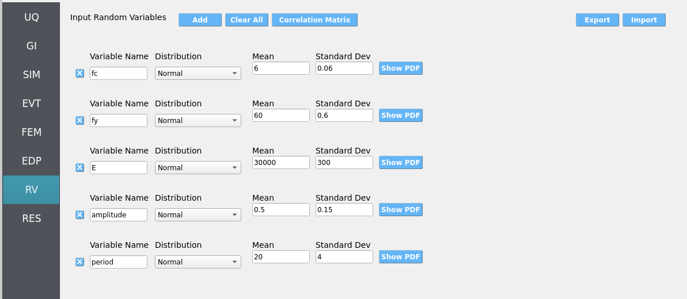
Warning
Ensure positivity of wave parameters (e.g., amplitude) if using Normal distributions—consider truncation or alternative distributions if needed.
4.3.3. Simulation
This workflow is intended for either local execution or remote execution to leverage near-real-time Celeris computation. Click RUN for local if you have a decently strong computer, or RUN at DesignSafe if you have a DesignSafe account and wish to use the Stampede3 supercomputer. When complete, the RES panel opens. Locally, the workflow will take from 4 to 20 minutes depending on your PC.
Warning
Keep recorder counts, output frequency, and sample size reasonable. Excessive export rates or too many recorders can dominate runtime and disk usage.
4.3.4. Analysis
Visualize time-series from event probes (e.g., wave-gauges, velocimeters, and load-sensors) by navigating to EVT / Wave Solver (Celeris) / Results. Then set the Run Type to Local for local workflows and choose the simulation you wish to inspect by setting Simulation Number between 1 and the number of samples you set in the UQ tab.
{kind=link}
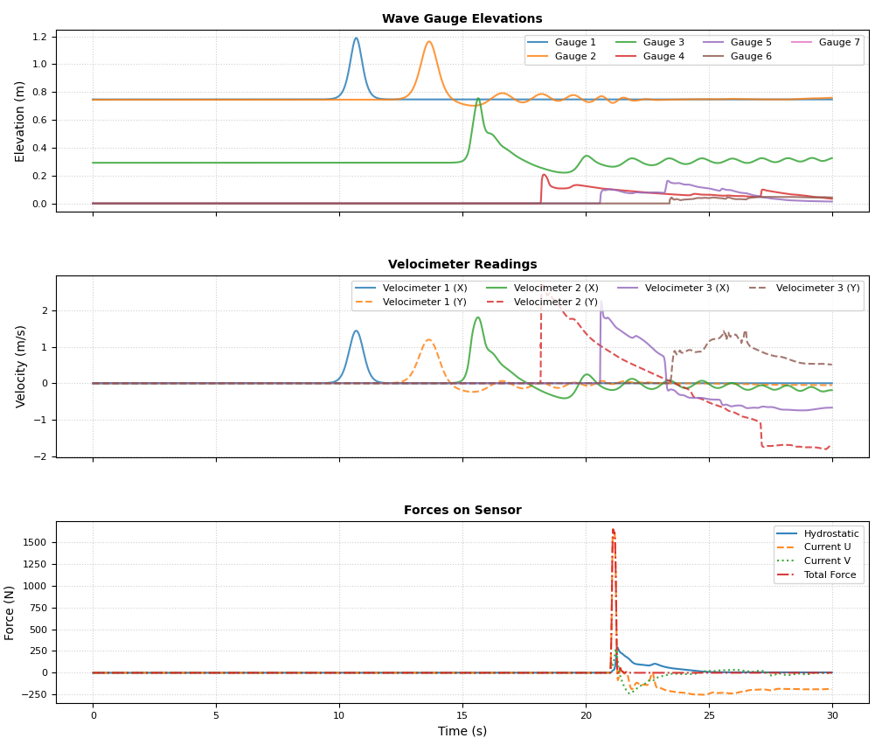
Wave-gauges & velocimeters: generally match experimental counterparts well at the instrumented locations.
Load-cells: simulated forces reasonably predict experiments. However, the may overestimate during wave-overtopping of the structure. Reason: the solver is 2D depth-averaged with forces calculated based on momentum relative to assumed fully rigid and reflecting load-sensing boundaries. During wave over-topping momentum from over-flow is misinterpreted as a loading flow thus increasing hydrodynamic loads compared to the physical experiment.
Returning to our primary HydroUQ workflow, which concerns uncertainty in structural response, we may now view the final results in the RES tab. Clicking Summary on the top-bar, a statistical summary of results is shown below:
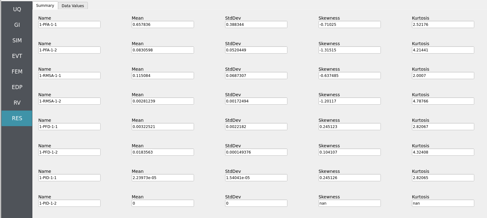
Clicking Data Values on the top-bar shows detailed histograms, cumulative distribution functions, and scatter plots relating the dependent and independent variables:
Note
In the Data Values tab, left- and right-click column headers to change plot axes; selecting a single column with both clicks displays frequency and CDF plots.
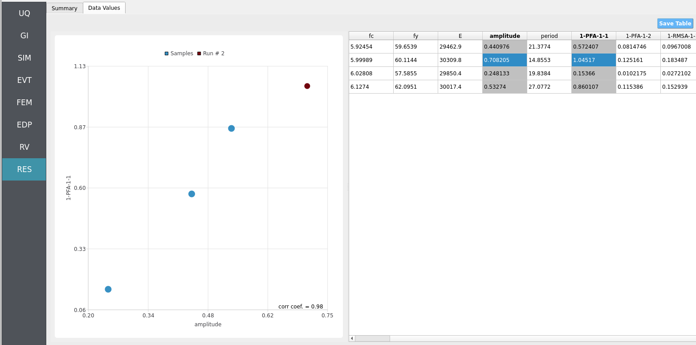
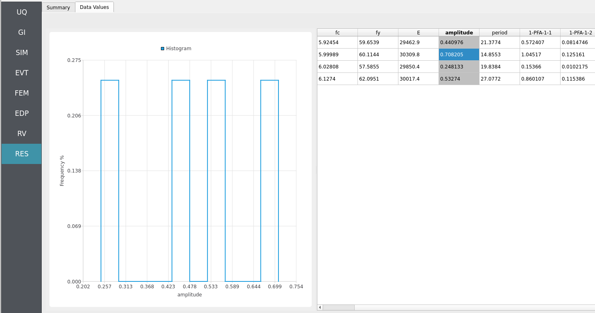
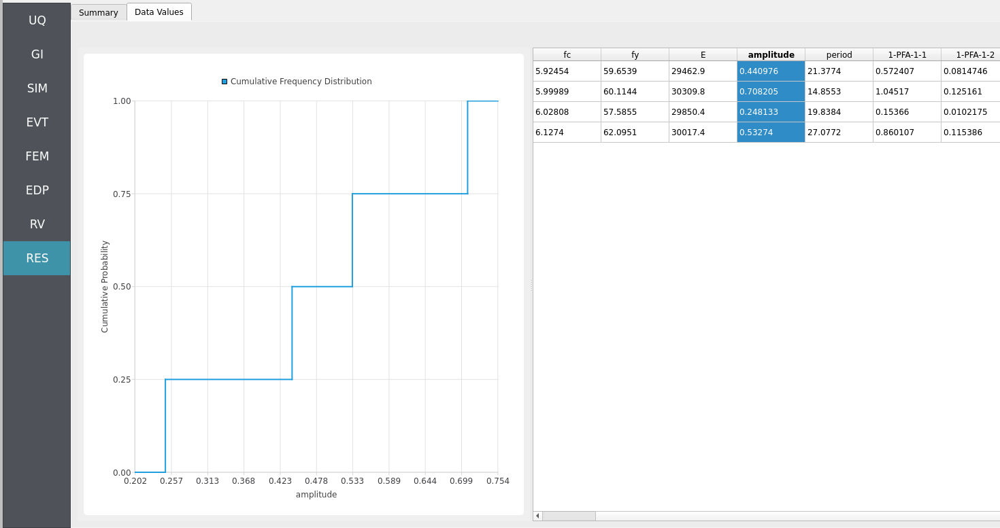
Note
Use consistent Froude similitude scaling when comparing numerical simulations, experiments, and full-scale scenarios. For cross-method comparisons, adopt identical structure footprints, friction models, probe placement, and other pertinent parameters to reduce bias.
For more advanced analysis, export results as a CSV file by clicking Save Table on the upper-right of the application window. This will save the independent and dependent variable data. I.e., the Random Variables you defined and the Engineering Demand Parameters determined from the structural response per each simulation.
To save your simulation configuration with results included, click File / Save As and specify a location for the HydroUQ JSON input file to be recorded to. You may then reload the file at a later time by clicking File / Open. You may also send it to others by email or place it in an online repository for research reproducibility. This example’s input file is viewable at Reproducibility.
To directly share your simulation job and results in HydroUQ with other DesignSafe users, click GET from DesignSafe. Then, navigate to the row with your job and right-click it. Select Share Job. You may then enter the DesignSafe username or usernames (comma-separated) to share with.
Important
Sharing a job requires that the job was initially ran with an Archive System ID (listed in the GET from DesignSafe table’s columns) that is not designsafe.storage.default. Any other Archive System ID allows for sharing with DesignSafe members on the associated project. See Jobs for more details.
4.3.5. Conclusions
We have successfully replicated experiments on a scaled-down version of Seaside, Oregon during a tsunami-like event, and further, extrapolated them to an uncertain structural analysis workflow. Note that because our loads are from this scaled-down scenario, mapping them directly to a full-scale structural model can lead to underpredictions of engineering demand parameters (EDPs). This highlights the need to either scale down the structure or scale up the forces using similitude laws. We leave this as an exercise to the reader.
4.3.6. Reproducibility
Random seed(s):
1(set in UQ)Model file:
Frame.tclApp version: HydroUQ v4.2.0
Wave solver: Celeris (as provided by NHERI-SimCenter/SimCenterBackendApplications)
System: Local Mac, Linux, and Windows, as well as TACC HPC clusters such as Stampede3.
Input: The HydroUQ input file is as follows: input.json , is used:
Click to expand the HydroUQ input file used for this example
1{
2 "Applications": {
3 "EDP": {
4 "Application": "StandardEDP",
5 "ApplicationData": {
6 }
7 },
8 "Events": [
9 {
10 "Application": "Celeris",
11 "ApplicationData": {
12 },
13 "EventClassification": "Hydro"
14 }
15 ],
16 "Modeling": {
17 "Application": "OpenSeesInput",
18 "ApplicationData": {
19 "fileName": "Frame.tcl",
20 "filePath": "{Current_Dir}/."
21 }
22 },
23 "Simulation": {
24 "Application": "OpenSees-Simulation",
25 "ApplicationData": {
26 }
27 },
28 "UQ": {
29 "Application": "Dakota-UQ",
30 "ApplicationData": {
31 }
32 }
33 },
34 "DefaultValues": {
35 "driverFile": "driver",
36 "edpFiles": [
37 "EDP.json"
38 ],
39 "filenameAIM": "AIM.json",
40 "filenameDL": "BIM.json",
41 "filenameEDP": "EDP.json",
42 "filenameEVENT": "EVENT.json",
43 "filenameSAM": "SAM.json",
44 "filenameSIM": "SIM.json",
45 "rvFiles": [
46 "AIM.json",
47 "SAM.json",
48 "EVENT.json",
49 "SIM.json"
50 ],
51 "workflowInput": "scInput.json",
52 "workflowOutput": "EDP.json"
53 },
54 "EDP": {
55 "type": "StandardEDP"
56 },
57 "Events": [
58 {
59 "Application": "Celeris",
60 "EventClassification": "Hydro",
61 "bathymetryFile": "bathy.txt",
62 "bathymetryFilePath": "{Current_Dir}/.",
63 "config": {
64 "Bcoef": 0.0666667,
65 "Bcoef_g": 0.6540000327,
66 "BoundaryWidth": 20,
67 "CB_label_height": 10,
68 "CB_show": 1,
69 "CB_width": 805,
70 "CB_width_uv": 0.9,
71 "CB_xbuffer": 8,
72 "CB_xbuffer_uv": 0.01,
73 "CB_xstart": 45,
74 "CB_xstart_uv": 0.05,
75 "CB_ystart": 30,
76 "Courant_num": 0.2,
77 "DispatchX": 55,
78 "DispatchY": 28,
79 "GMapImageHeight": 512,
80 "GMapImageWidth": 512,
81 "GMoffsetX": 0,
82 "GMoffsetY": 0,
83 "GMscaleX": 1,
84 "GMscaleY": 1,
85 "GoogleMapOverlay": 0,
86 "HEIGHT": 437,
87 "IsGoogleMapLoaded": 0,
88 "NLSW_or_Bous": 1,
89 "NumberOfTimeSeries": 6,
90 "PI": 3.141592653589793,
91 "TWO_THETA": 4,
92 "T_star_coef": 5,
93 "Theta": 2,
94 "ThreadX": 16,
95 "ThreadY": 16,
96 "WIDTH": 873,
97 "WaveType": 3,
98 "add_Disturbance": -1,
99 "amplitude": "RV.amplitude",
100 "base_depth": 0.75202286,
101 "boundary_epsilon": 5.6553838196257955e-09,
102 "boundary_g": 9.81,
103 "boundary_nx": 872,
104 "boundary_ny": 436,
105 "boundary_shift": 4,
106 "canvas_height_ratio": 1,
107 "canvas_width_ratio": 1,
108 "changeAmplitude": 0.07520228600000001,
109 "changeRadius": 2.5,
110 "changeType": 1,
111 "changeXTimeSeries": 0,
112 "changeYTimeSeries": 0,
113 "changethisTimeSeries": 5,
114 "chartDataUpdate": 0,
115 "clearCon": 1,
116 "clearConc": 0,
117 "click_update": -1,
118 "colorMap_choice": 0,
119 "colorVal_max": 1,
120 "colorVal_min": -1,
121 "countTimeSeries": 9079,
122 "delta_breaking": 2,
123 "direction": 0,
124 "dissipation_threshold": 0.3,
125 "disturbanceCrestamp": 0.6,
126 "disturbanceDip": 0,
127 "disturbanceDir": 0,
128 "disturbanceLength": 0,
129 "disturbanceRake": 0,
130 "disturbanceType": 1,
131 "disturbanceWidth": 0,
132 "disturbanceXpos": 3,
133 "disturbanceYpos": 0,
134 "dt": 0.0036817133736190564,
135 "duration": 30,
136 "durationTimeSeries": 0,
137 "dx": 0.05,
138 "dy": 0.05,
139 "dzdt_F_coef": 0.15,
140 "dzdt_I_coef": 0.5,
141 "east_boundary_type": 0,
142 "elapsedTime": 204.542,
143 "elapsedTime_update": 45.224,
144 "exampleDirs": [
145 "./examples/Ventura/",
146 "./examples/Santa_Cruz/",
147 "./examples/Santa_Cruz_tsunami/",
148 "./examples/Barry_Arm/",
149 "./examples/Crescent_City/",
150 "./examples/DuckFRF_NC/",
151 "./examples/Greenland/",
152 "./examples/Half_Moon_Bay/",
153 "./examples/Hania_Greece/",
154 "./examples/Miami_Beach_FL/",
155 "./examples/Miami_FL/",
156 "./examples/Newport_OR/",
157 "./examples/POLALB/",
158 "./examples/SantaBarbara/",
159 "./examples/Taan_fjord/",
160 "./examples/OSU_WaveBasin/",
161 "./examples/SF_Bay_tides/"
162 ],
163 "force_sensor_begin": [
164 33.4,
165 10.35
166 ],
167 "force_sensor_end": [
168 33.4,
169 11.05
170 ],
171 "forward": 1,
172 "friction": 0.001,
173 "full_screen": 0,
174 "g": 9.81,
175 "g_over_dx": 196.2,
176 "g_over_dy": 196.2,
177 "half_g": 4.905,
178 "html_update": -1,
179 "infiltrationRate": 0.001,
180 "isManning": 0,
181 "lat_LL": 0,
182 "lon_LL": 0,
183 "lat_UR": 0.00019665019,
184 "lon_UR": 0.00039285039,
185 "address": "Seaside, OR",
186 "offset_latitude": 0.0,
187 "offset_longitude": -0.01,
188 "locationOfTimeSeries": [
189 {
190 "xts": 0,
191 "yts": 0
192 },
193 {
194 "xts": 9.91543,
195 "yts": 12.5305
196 },
197 {
198 "xts": 16.8032,
199 "yts": 12.6397
200 },
201 {
202 "xts": 25.9505,
203 "yts": 12.8217
204 },
205 {
206 "xts": 32.2916,
207 "yts": 12.8945
208 },
209 {
210 "xts": 36.8106,
211 "yts": 13.0766
212 }
213 ],
214 "maxNumberOfTimeSeries": 16,
215 "maxdurationTimeSeries": 30,
216 "mouse_current_canvas_indX": 219,
217 "mouse_current_canvas_indY": 4,
218 "mouse_current_canvas_positionX": 0,
219 "mouse_current_canvas_positionY": 0,
220 "n_time_steps_means": 47290,
221 "n_time_steps_waveheight": 47290,
222 "n_write_interval": null,
223 "n_writes": null,
224 "north_boundary_type": 0,
225 "numberOfWaves": 2961,
226 "one_over_d2x": 400,
227 "one_over_d2y": 400,
228 "one_over_d3x": 8000,
229 "one_over_d3y": 8000,
230 "one_over_dx": 20,
231 "one_over_dxdy": 400,
232 "one_over_dy": 20,
233 "period": "RV.period",
234 "pred_or_corrector": 2,
235 "rand_phase": 0,
236 "reflect_x": 1740,
237 "reflect_y": 868,
238 "render_step": 4,
239 "rotationAngle_xy": 0,
240 "run_example": 0,
241 "save_baseline": 0,
242 "seaLevel": 0,
243 "sedC1_criticalshields": 0.045,
244 "sedC1_d50": 0.2,
245 "sedC1_denrat": 2.65,
246 "sedC1_erosion": 0.0002746401358265295,
247 "sedC1_fallvel": 0.14690813456034352,
248 "sedC1_n": 0.4,
249 "sedC1_psi": 5e-05,
250 "sedC1_shields": 308.8993914681988,
251 "shift_x": 0,
252 "shift_y": 0,
253 "ship_c1a": 0.005483113556160754,
254 "ship_c1b": 0.04934802200544678,
255 "ship_c2": 0.021932454224643013,
256 "ship_c3a": 0.005483113556160754,
257 "ship_c3b": 0.04934802200544678,
258 "ship_draft": 2,
259 "ship_heading": 0,
260 "ship_length": 30,
261 "ship_posx": -100,
262 "ship_posy": 450,
263 "ship_width": 10,
264 "showBreaking": 1,
265 "significant_wave_height": 1,
266 "simPause": -1,
267 "south_boundary_type": 0,
268 "surfaceToChange": 1,
269 "surfaceToPlot": 0,
270 "timeScheme": 2,
271 "tooltipVal_Hs": 0.17761249840259552,
272 "tooltipVal_bottom": -0.6820381879806519,
273 "tooltipVal_eta": 0.045800093561410904,
274 "tooltipVal_friction": 0.0010000000474974513,
275 "tridiag_solve": 2,
276 "updateTimeSeriesTx": 0,
277 "useBreakingModel": 1,
278 "useSedTransModel": 0,
279 "viewType": 1,
280 "west_boundary_type": 2,
281 "whiteWaterDecayRate": 0.9,
282 "whiteWaterDispersion": 0.1,
283 "write_dt": null,
284 "xClick": 0,
285 "yClick": 0
286 },
287 "configFile": "config.json",
288 "configFilePath": "{Current_Dir}/.",
289 "subtype": "Celeris",
290 "type": "Celeris",
291 "waveFile": "waves.txt",
292 "waveFilePath": "{Current_Dir}/."
293 }
294 ],
295 "GeneralInformation": {
296 "NumberOfStories": 1,
297 "PlanArea": 129600,
298 "StructureType": "RM1",
299 "YearBuilt": 1990,
300 "depth": 360,
301 "height": 576,
302 "location": {
303 "latitude": 37.8715,
304 "longitude": -122.273
305 },
306 "name": "",
307 "planArea": 129600,
308 "stories": 1,
309 "units": {
310 "force": "kips",
311 "length": "in",
312 "temperature": "C",
313 "time": "sec"
314 },
315 "width": 360
316 },
317 "Modeling": {
318 "centroidNodes": [
319 1,
320 3
321 ],
322 "dampingRatio": 0.02,
323 "ndf": 3,
324 "ndm": 2,
325 "randomVar": [
326 {
327 "name": "fc",
328 "value": "RV.fc"
329 },
330 {
331 "name": "fy",
332 "value": "RV.fy"
333 },
334 {
335 "name": "E",
336 "value": "RV.E"
337 }
338 ],
339 "responseNodes": [
340 1,
341 3
342 ],
343 "type": "OpenSeesInput"
344 },
345 "Simulation": {
346 "Application": "OpenSees-Simulation",
347 "algorithm": "Newton",
348 "analysis": "Transient -numSubLevels 2 -numSubSteps 10",
349 "convergenceTest": "NormUnbalance 1.0e-2 10",
350 "dampingModel": "Rayleigh Damping",
351 "firstMode": 1,
352 "integration": "Newmark 0.5 0.25",
353 "modalRayleighTangentRatio": 0,
354 "numModesModal": -1,
355 "rayleighTangent": "Initial",
356 "secondMode": -1,
357 "solver": "Umfpack"
358 },
359 "UQ": {
360 "parallelExecution": false,
361 "samplingMethodData": {
362 "method": "LHS",
363 "samples": 4,
364 "seed": 1
365 },
366 "saveWorkDir": true,
367 "uqType": "Forward Propagation"
368 },
369 "correlationMatrix": [
370 1,
371 0,
372 0,
373 0,
374 0,
375 0,
376 1,
377 0,
378 0,
379 0,
380 0,
381 0,
382 1,
383 0,
384 0,
385 0,
386 0,
387 0,
388 1,
389 0,
390 0,
391 0,
392 0,
393 0,
394 1
395 ],
396 "localAppDir": "/home/justinbonus/SimCenter/HydroUQ/build",
397 "randomVariables": [
398 {
399 "distribution": "Normal",
400 "inputType": "Parameters",
401 "mean": 6,
402 "name": "fc",
403 "refCount": 1,
404 "stdDev": 0.06,
405 "value": "RV.fc",
406 "variableClass": "Uncertain"
407 },
408 {
409 "distribution": "Normal",
410 "inputType": "Parameters",
411 "mean": 60,
412 "name": "fy",
413 "refCount": 1,
414 "stdDev": 0.6,
415 "value": "RV.fy",
416 "variableClass": "Uncertain"
417 },
418 {
419 "distribution": "Normal",
420 "inputType": "Parameters",
421 "mean": 30000,
422 "name": "E",
423 "refCount": 1,
424 "stdDev": 300,
425 "value": "RV.E",
426 "variableClass": "Uncertain"
427 },
428 {
429 "distribution": "Normal",
430 "inputType": "Parameters",
431 "mean": 0.5,
432 "name": "amplitude",
433 "refCount": 1,
434 "stdDev": 0.15,
435 "value": "RV.amplitude",
436 "variableClass": "Uncertain"
437 },
438 {
439 "distribution": "Normal",
440 "inputType": "Parameters",
441 "mean": 20,
442 "name": "period",
443 "refCount": 1,
444 "stdDev": 4,
445 "value": "RV.period",
446 "variableClass": "Uncertain"
447 }
448 ],
449 "remoteAppDir": "/home/justinbonus/SimCenter/HydroUQ/build",
450 "resultType": "SimCenterUQResultsSampling",
451 "runType": "runningLocal",
452 "summary": [
453 ],
454 "workingDir": "/home/justinbonus/Documents/HydroUQ/LocalWorkDir"
455}